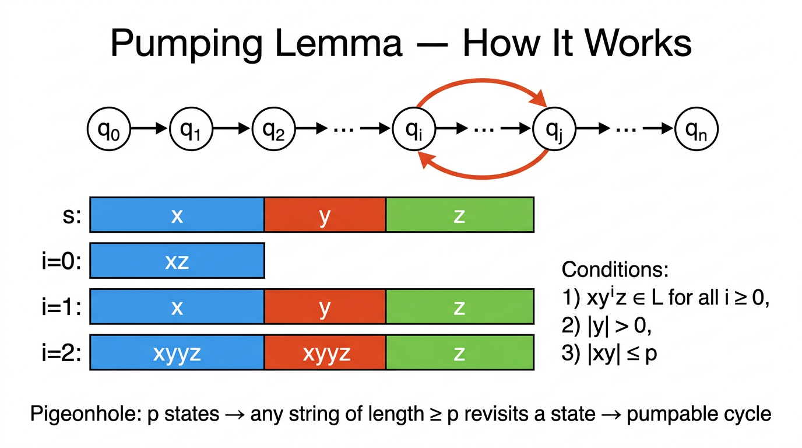

Pumping Lemma for Regular Languages — COMP0003 Automata¶
Lecture-style notes. The pumping lemma is the standard tool for proving a language is not regular. It formalises the intuition that a DFA with finitely many states must revisit a state on any sufficiently long input — creating a loop that can be "pumped" (repeated or removed). The contrapositive turns this into a proof technique: exhibit a string that cannot be pumped without leaving the language, and regularity is refuted.
1. COMPLETE TOPIC SUMMARIES¶
Limits of finite automata¶
A DFA has a fixed, finite number of states. If a language requires the machine to "remember" an unbounded quantity — for example, the exact number of \(0\)s seen so far in order to later match it with \(1\)s — no finite state set suffices. The language \(\{0^n 1^n \mid n \geq 0\}\) is the textbook example: to accept \(0^p 1^p\) the machine would need to distinguish \(p+1\) different counts, so for arbitrary \(p\) no single DFA works.
The pumping lemma captures this limitation precisely.
The pumping lemma — statement¶

{kind=link}
Theorem (Pumping Lemma for Regular Languages). If \(A\) is a regular language, then there exists an integer \(p \geq 1\) (the pumping length) such that every string \(s \in A\) with \(|s| \geq p\) can be split into three parts \(s = xyz\) satisfying all three of the following conditions:
- \(xy^i z \in A\) for every \(i \geq 0\) — the middle piece \(y\) can be repeated any number of times (including zero) and the result stays in \(A\).
- \(|y| > 0\) — the pumped piece is non-empty (pumping actually changes the string).
- \(|xy| \leq p\) — \(x\) and \(y\) together lie within the first \(p\) characters of \(s\).
Important: the lemma says "there exists some \(p\)" and "there exists some split \(xyz\)." You do not get to choose \(p\) or the split when applying the lemma.
Proof sketch — pigeonhole on DFA states¶
Let \(M\) be a DFA for \(A\) with \(n\) states. Set \(p = n\).
Take any \(s = s_1 s_2 \cdots s_m \in A\) with \(m \geq p\). Processing \(s\) visits \(m + 1\) states (including the start state): \(q_0, q_1, \ldots, q_m\), where \(q_j = \delta(q_{j-1}, s_j)\).
Since \(m + 1 > n\) (pigeonhole principle), some state \(q_r\) appears twice: there exist indices \(0 \leq j < k \leq p\) with \(q_j = q_k\).
Define the split:
Then:
- Condition 1: The sub-path for \(y\) is a cycle from \(q_j\) back to \(q_j\). Traversing it \(i\) times (or zero times) still leads to \(q_j\), then the DFA reads \(z\) and reaches the same accept state. So \(xy^i z \in A\).
- Condition 2: \(k > j\), so \(|y| = k - j \geq 1\).
- Condition 3: \(k \leq p\), so \(|xy| = k \leq p\).
Using the contrapositive to prove non-regularity¶
The pumping lemma's logical structure is:
The contrapositive is:
Flipping the quantifiers:
Proof template (assume-for-contradiction):
- Assume \(A\) is regular. Then the pumping lemma gives some \(p\).
- Choose a clever "evil string" \(s \in A\) with \(|s| \geq p\).
- For every valid split \(s = xyz\) (respecting \(|y| > 0\) and \(|xy| \leq p\)), show that some \(xy^i z \notin A\) for a particular \(i\).
- Contradiction: the pumping lemma is violated, so \(A\) cannot be regular.
The art is in step 2 — picking the right evil string — and step 3 — arguing over all possible splits.
Example 1 — 0^n 1^n (n ≥ 0) is not regular¶
Proof. Assume for contradiction that \(A = \{0^n 1^n \mid n \geq 0\}\) is regular with pumping length \(p\).
Evil string: \(s = 0^p 1^p\). Clearly \(s \in A\) and \(|s| = 2p \geq p\).
Consider any split \(s = xyz\) with \(|y| > 0\) and \(|xy| \leq p\).
Since \(|xy| \leq p\), both \(x\) and \(y\) consist entirely of \(0\)s (the first \(p\) characters are all \(0\)).
Write \(x = 0^a\), \(y = 0^b\) with \(b \geq 1\), \(z = 0^{p - a - b} 1^p\).
Pump with \(i = 2\): \(xy^2 z = 0^{a} 0^{2b} 0^{p-a-b} 1^p = 0^{p+b} 1^p\).
Since \(b \geq 1\), there are more \(0\)s than \(1\)s, so \(xy^2 z \notin A\). Contradiction.
Example 2 — equal numbers of 0s and 1s is not regular¶
Proof. Let \(A = \{w \in \{0,1\}^* \mid \#_0(w) = \#_1(w)\}\). Assume \(A\) is regular with pumping length \(p\).
Evil string: \(s = 0^p 1^p \in A\), \(|s| = 2p \geq p\).
By condition 3, \(|xy| \leq p\), so \(y\) lies entirely within the block of \(0\)s: \(y = 0^b\) with \(b \geq 1\).
Pump with \(i = 2\): \(xy^2 z\) has \(p + b\) zeros and \(p\) ones. Since \(b \geq 1\), the counts are unequal, so \(xy^2 z \notin A\). Contradiction.
Key observation: Condition 3 (\(|xy| \leq p\)) is critical here — it forces \(y\) into the all-\(0\) prefix and eliminates cases where \(y\) might straddle both blocks.
Proof structure checklist¶
Every pumping-lemma non-regularity proof should include:
| Step | What to write |
|---|---|
| Assume | "\(A\) is regular; let \(p\) be its pumping length." |
| Evil string | State \(s \in A\), verify \(\|s\| \geq p\). |
| All splits | "Consider any \(s = xyz\) with \(\|y\| > 0\), \(\|xy\| \leq p\)." |
| Derive contradiction | Pick a specific \(i\) (often \(i = 0\) or \(i = 2\)) and show \(xy^i z \notin A\). |
| Conclude | "Contradiction with the pumping lemma, so \(A\) is not regular." |
2. EXAM-STYLE QUESTIONS (WITH MODEL ANSWERS)¶
Q1 — State the pumping lemma¶
Question. State the pumping lemma for regular languages precisely, including all three conditions.
Model answer. For every regular language \(A\) there exists an integer \(p \geq 1\) such that every string \(s \in A\) with \(|s| \geq p\) can be written as \(s = xyz\) where: (1) \(xy^i z \in A\) for all \(i \geq 0\); (2) \(|y| > 0\); (3) \(|xy| \leq p\).
Q2 — Prove 0^n 1^n (n ≥ 0) is not regular¶
Question. Using the pumping lemma, prove that the language \(L = \{0^n 1^n \mid n \geq 0\}\) is not regular.
Model answer. Assume for contradiction \(L\) is regular with pumping length \(p\). Choose \(s = 0^p 1^p \in L\) with \(|s| = 2p \geq p\). For any split \(s = xyz\) with \(|y| > 0\) and \(|xy| \leq p\), condition 3 forces \(y = 0^b\) (\(b \geq 1\)) since the first \(p\) characters are all \(0\). Then \(xy^2 z = 0^{p+b} 1^p \notin L\) because \(p + b \neq p\). This contradicts the pumping lemma, so \(L\) is not regular.
Q3 — Why does condition 3 matter?¶
Question. In the pumping lemma, condition 3 states \(|xy| \leq p\). Explain why this condition is useful and give an example where it simplifies a non-regularity proof.
Model answer. Condition 3 constrains \(y\) to lie within the first \(p\) characters of the string. Without it, we would need to consider splits where \(y\) could be anywhere, making case analysis much harder. For instance, when proving \(\{w \mid \#_0(w) = \#_1(w)\}\) is not regular with evil string \(0^p 1^p\), condition 3 forces \(y\) to consist entirely of \(0\)s. This immediately means pumping adds or removes only \(0\)s, breaking the equal-count property — no further case analysis is needed.
Q4 — Prove ww (same word twice) is not regular¶
Question. Prove that \(L = \{ww \mid w \in \{0,1\}^*\}\) is not regular.
Model answer. Assume \(L\) is regular with pumping length \(p\). Choose \(s = 0^p 1 0^p 1 \in L\) (here \(w = 0^p 1\)), with \(|s| = 2p + 2 \geq p\). By condition 3, \(|xy| \leq p\), so \(y = 0^b\) (\(b \geq 1\)) lies entirely in the first block of \(0\)s. Pump down (\(i = 0\)): \(xz = 0^{p-b} 1 0^p 1\). For this to be in \(L\) it must equal \(uu\) for some \(u\), meaning \(|xz| = 2p + 2 - b\) must be even and the two halves must match. The first half has \(p - b\) zeros then a \(1\); the second half starts with zeros but has \(p\) of them. Since \(b \geq 1\), the two halves differ, so \(xz \notin L\). Contradiction.
Q5 — Pigeonhole and the pumping length¶
Question. Explain how the proof of the pumping lemma uses the pigeonhole principle. Why is the pumping length related to the number of DFA states?
Model answer. If a DFA has \(n\) states, processing a string of length \(m \geq n\) visits \(m + 1\) states. By the pigeonhole principle, at least two of these must be the same state — say at positions \(j\) and \(k\) with \(j < k \leq n\). The substring between positions \(j\) and \(k\) therefore traces a cycle in the DFA. This cycle can be traversed any number of times (including zero), giving the pumping behaviour. The pumping length \(p\) is set to \(n\) (the number of states) to guarantee the pigeonhole condition triggers within the first \(p\) characters (ensuring condition 3: \(|xy| \leq p\)).
3. MUST-KNOW KEY POINTS¶
- Pumping lemma: every regular language has a pumping length \(p\); any string \(s \in A\) with \(|s| \geq p\) splits as \(s = xyz\) with (1) \(xy^i z \in A\) for all \(i \geq 0\), (2) \(|y| > 0\), (3) \(|xy| \leq p\).
- Proof basis: pigeonhole principle on DFA states — \(n\) states + string of length \(\geq n\) → repeated state → cycle → pumpable loop.
- Contrapositive usage: to prove \(A \notin \text{RL}\), for every \(p\), exhibit \(s \in A\) (\(|s| \geq p\)) such that no valid \(xyz\) split satisfies all three conditions.
- Evil string choice: pick \(s\) that makes the all-splits argument easy; \(0^p 1^p\) is the classic choice for counting-based languages.
- Condition 3 is your friend: \(|xy| \leq p\) pins \(y\) to the first \(p\) characters, often eliminating most cases.
- Pumping down (\(i = 0\)) removes \(y\); pumping up (\(i = 2, 3, \ldots\)) duplicates \(y\) — use whichever gives the clearest contradiction.
- The pumping lemma is a necessary condition for regularity, not sufficient — passing the test does not prove a language is regular.
4. HIGH-PRIORITY TOPICS¶
🔴 Must Know¶
- Full statement of the pumping lemma with all three conditions and the correct quantifier order (\(\exists\, p\), \(\forall\, s\), \(\exists\, xyz\)).
- Proof structure for non-regularity: assume regular → pick evil string → consider all splits → derive contradiction.
- Worked proof for \(\{0^n 1^n \mid n \geq 0\}\): evil string \(0^p 1^p\), condition 3 forces \(y\) into the \(0\)-block, pumping breaks the count.
- Pigeonhole argument: \(n\) states, \(\geq n\) transitions → repeated state → cycle.
- Role of condition 3 (\(|xy| \leq p\)): constrains \(y\) to the first \(p\) characters of the string.
🟡 Important¶
- Proof for \(\{w \mid \#_0(w) = \#_1(w)\}\): same evil string, same condition-3 argument.
- Quantifier flipping in the contrapositive: \(\forall\, p\;\exists\, s\;\forall\, xyz\) some condition fails.
- Pumping down (\(i = 0\)) vs pumping up (\(i \geq 2\)) — choosing the right \(i\).
- The pumping lemma is necessary but not sufficient for regularity.
🟢 Useful but Lower Priority¶
- Finite regular languages satisfy the pumping lemma vacuously (pumping length exceeds all string lengths).
- More exotic evil strings (e.g. \(0^p 1 0^p 1\) for \(\{ww\}\)) and multi-case proofs.
- Myhill–Nerode theorem as an alternative (and complete) characterisation of regularity.
5. TOPIC INTERCONNECTIONS & BIGGER PICTURE¶
- DFA structure is the foundation: the pumping lemma is a direct consequence of finite-state machines having finitely many states and deterministic transitions.
- Closure properties of regular languages (union, intersection, complement) can sometimes substitute for the pumping lemma — if \(A\) were regular, then \(A \cap 0^*1^*\) would be regular, but that intersection is \(\{0^n 1^n\}\), which we already know is not regular.
- Context-free languages have their own pumping lemma (five-part split \(s = uvxyz\)) — the proof idea generalises from DFA states to parse-tree paths, and a PDA's stack is the key structural upgrade over a DFA.
- Pushdown automata (next topic) overcome the DFA limitation: the stack provides unbounded memory for matching patterns like \(0^n 1^n\).
- The Chomsky hierarchy places regular languages strictly inside context-free languages; the pumping lemma is the standard tool for proving the strict containment.
6. EXAM STRATEGY TIPS¶
- Memorise the template: "Assume \(A\) is regular with pumping length \(p\). Choose \(s = \ldots \in A\) with \(|s| \geq p\). Consider any split \(s = xyz\) with \(|y| > 0\), \(|xy| \leq p\). Then \(xy^i z = \ldots \notin A\). Contradiction."
- Always state \(|s| \geq p\) explicitly — it is a precondition of the lemma and examiners check for it.
- Use condition 3 early to restrict where \(y\) can be. Write "since \(|xy| \leq p\), \(y\) lies entirely within [some block]" before doing any case work.
- Don't confuse quantifiers: you choose \(s\); the adversary chooses the split. You must handle all valid splits, not just one.
- Pumping up (\(i = 2\)) is usually simplest — it adds characters, making length-mismatch arguments straightforward.
- Check \(i = 0\) as well if pumping up is awkward: removing \(y\) can also break membership.
- If asked "is the pumping lemma sufficient to prove regularity?" the answer is no — some non-regular languages happen to be pumpable.
These notes cover Automata Lecture 6 material on the pumping lemma for regular languages. For the formal definition and examples of DFAs/NFAs that motivate the finite-state limitation, see earlier lecture notes.